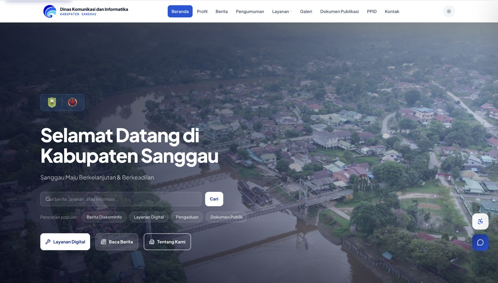
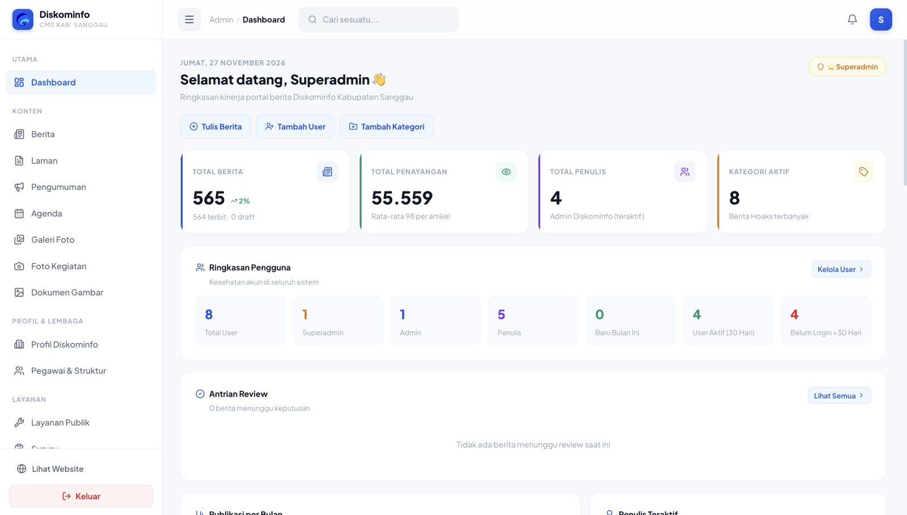

Diskominfo Sanggau
Portal resmi pemerintah daerah
Portal Dinas Komunikasi dan Informatika Kabupaten Sanggau: berita, pengumuman, layanan digital, galeri, dokumen publikasi, dan PPID. CMS-nya memiliki peran Superadmin, Admin, dan Penulis, lengkap dengan antrian review berita.
Kunjungi website
